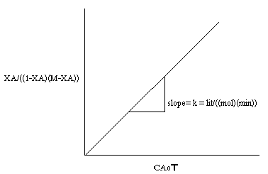

Assignment
1. A liquid phase reaction is to be carried out in a suitable reactor. The stoichiometry of the reaction is A → R. The feed concentraƟon is 0.90 mol A/liter and is available at a rate of 100 mol A/min. The following reactors may be considered for choice. a) Mixed flow reactor. b) Tubular flow reactor c) Recycle reactor with a recycle ratio of 0.50. It is desirable to achieve a fractional conversion of 0.7 78. Which one of the above mentioned reactors do you recommend and why? The following data, available for the reaction, may be used in your calculations. Rate, mol A/lit. min. 0.1 0.3 0.5 0.6 0.5 0.25 0.1 0.06 0.05 Concentration, mol A/lit. 0.1 0.2 0.3 0.4 0.5 0.6 0.7 0.8 1.0 2. The liquid phase reaction A → R + S follows first - order kinetics with a reaction velocity constant of 0.80 k sec - 1 . A feed having a concentration of 1 k mol A/m 3 at a rate of 1.60 m 3 /k sec. is available for processing. A cascade having three equal sized back mix reactors, with each vessel having a hold - up volume of 50 liters, is available for service. When this reaction is carried out in the cascade, find the final conversion which can be achieved.


Experiment No.8 Reaction kinetic studies in a mixed flow reactor Background and Theory
- The reactor runs at steady state i.e. all of the time derivatives go to zero.
- None of the variables (temperature, concentration, reaction rate, etc) are functions of position, i.e. all of the spatial derivatives go to zero.
- The conditions that exist at the exit are the same as those everywhere in the reactor.


:
Mixed flow reactor
Aim:
Conduct simulation based experiments to determine the rate constant for the
saponification of ethyl acetate with NaOH at different temperatures using a mixed
flow reactor(continuous stirred tank reactor). Also calculate the frequency factor
and activation energy for the reaction. Discuss on temperature dependency of rate
constant
CH3COOC2H5 (A)+ NaOH (B)
CH3COONa + C2H5OH. It is an elementary reaction
Ethyl acetate is the limiting reactant
Apparatus: conductivity meter
Procedure:
1.
2.
3.
4.
5.
Standardise the NaOH stock solution and note down its concentration.
Calculate the concentration of ethyl acetate in stock solution
Fill the reservoirs with NaOH and ethyl acetate stock solutions
Measure the volume of the reactor.
Switch on the pump and allow ethyl acetate to flow into the reactor at certain
flowrate and measure the flowrate(VA) using rotameter.
6. Set the required temperature to be maintained in the reactor.Switch on the
heater to heat the reactor contents to the required temperature .
7. Calculate the flowrate of NaOH(VB) required to keep the desired value of
M(M=CBo/CAo). M may be greater than or equal to one. Calculate the total
flowrate (Q).
8. Adjust the flowrate of NaOH to the calculated value, without changing the
EA flowrate.
9. Calculate the actual value of M obtained after adjusting the flowrates.
10. Calculate the space time using the total flow rate.
11. Start the stirrer in the reactor. Close the drain valve completely. Allow the
reaction to proceed till steady state is attained, as indicated by constant
reading in the conductivity meter.
12. Note down the conductivity (in mS/cm) of the reaction mixture in, after
steady state is attained. Note: Some conductivity meters may display
conductance (mS) not the conductivity(mS/cm) [Refer theory for more
information].
13. Determine the concentration of unreacted NaOH in the reaction mixture by
using the conductivity meter calibration equation.
14. Repeat steps (6) to (12) for different EA flowrates .
15. Conduct the experiment at different temperatures
Observations and calculations:
Aà Ethyl acetate
B àNaOH
Strength of Ethyl acetate in stock = CAS = ------------------------ gmol/L
Strength of NaOH in stock solution=CBS= ------------------------ gmol/L
Diameter of the reaction vessel, d = -----------------------cm
Height of the vessel upto reactor outlet, h = -----------------------cm
V = volume of teh reactor= d2h/4 =
= -----------------------cm3
Calculations:
Ethyl acetate flow rate = VA = ------------------------------LPH
VB/VA = M(CAS/CBS)
Flow rate of NaOH required to keep the desired M , VB = M*VA(CAS/CBS)
Flow rate of NaOH set, =
LPH
Total flow rate Q= VA+VB =
Space time , = V/Q =
min
Actual value of M(obtained in the experiment) = VB*CBS/VA*CAS
=
Initial concentartion of ethyl acetate in the feed mixture,
CAo= (VA*CAS)/Q
CAo = --------------------gmol/L
Concentartion of NaOH in the feed mixture,
CBO = (VB*CBS)/Q
CBO = --------------------gmol/L
As the conductivity meter calibration is available only at 280C, the conductivity
meter reading obtained at a given temperature of reaction is to be corrected for 280C.
Temperature compensation for conductivity meter
YT = Y28 / (1+0.0145(T-28))
Where ,
YT =conductivity meter reading at any temperature T in mS/cm
Y28 = conductivity meter reading at a temperature of 280C in mS/cm
Obtain Y28 corresponding to measured conductivity meter reading ( YT) using the
equation above.
Conductivity meter is calibrated for concentrations of NaOH in the reaction mixture at a
temperature of 280C.
Obtain the Concentration of NaOH at 280C using the calibration equation given below
Conductivitymeter calibration equation for 280C.
CB =0.00026 Y28 -0.000063
Where,
CB= Concentration of NaOH in the reaction mixture at steady state
Y28 = Conductivity meter reading for solution, corrected for 280C
Concentartion of unreacted NaOH in the reaction mixture at steady state,
CB=
gmol/L (obtained from the conductivity meter calibration
graph)
Concentartion of ethyl acetate in the reaction mixture at steady state,
CA = CAo - CBo+ CB
CA
Conversion of ethyl acetate, XA = 1
= --------------------gmol/L
(CA/ CAo)=
Performance equation for MFR with rate equation of the form rA = kCACB
can be written as
=
(
)
(B)
for MFR
Plotting
(
)
vs
yields a straightline passing through origin. The
slope=k . The equation holds good for M=1 or greater than 1.
Plot a graph of XA/((1-XA)(M-XA)) Vs CAo

From the graph get,
k = -------------------------------litre/((gmol)(min))
Similarly the experiment may be performed with different temperatures and the
rate constants at these temperatures may be determined.
Obtain the rate constant at three or more different temperatures.
From Arrhenius Equation,
k = koe
Plot
æ -E ö
ç
÷
è RT ø
lnk vs 1/T
Determine the activation energy (E) and the frequency factor (ko) from the slope and
intercept of the above plot.
Intercept= lnk0
Slope=-E/R
R is the gas constant
Frequency factor , ko=
Activation energy= E=
min-1(litre / gmol)
J/mol
Results:
The rate constant for the saponification of Ethy acetate with NaOH at a temp of
ToC,
k = -------------------------------litre/((mol)(min))
Discuss and conclude on the temperature dependency of rate constant.
The activation energy (E) for the reaction=
The frequency factor (ko)=
J/mol
min-1(litre / gmol)

Chemical Reaction Engineering (3rd Edition), Octave Levenspiel, 1999, John Wiley & Sons Elements of Chemical Reaction Engineering (4th Edition), H. Scott Fogler, 2005, Prentice Hall Chemical Reactor Analysis and Design (2nd Edition), Gilbert F. Froment and Kenneth B. Bischoff, 1990, John Wiley & Sons Fundamentals of Chemical Reaction Engineering (1st Edition), Mark E. Davis and Robert J. Davis, 2003, The McGraw-Hill Companies, Inc. MIT Open Courseware Lecture notes in Chemical and biological Reaction Engineering. http://ocw.mit.edu/courses/chemical-engineering/10-37-chemical-and-biological-reaction-engineering-spring-2007/lecture-notes/lec09_03072007_w.pdf
Q1. Time taken for one complete oscillation
is called Time Period of the oscillator.
True
False
Q2. Time period of the oscillator is constant
for given values of mass, length and initial
conditions.
True